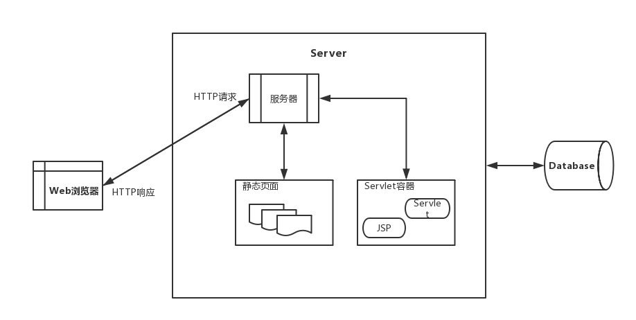
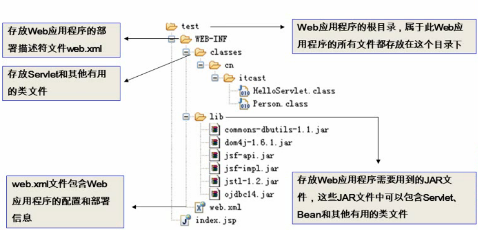
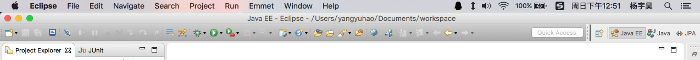
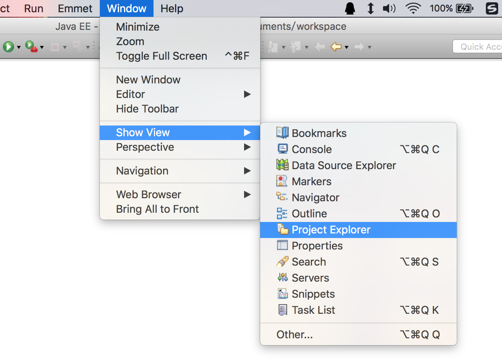
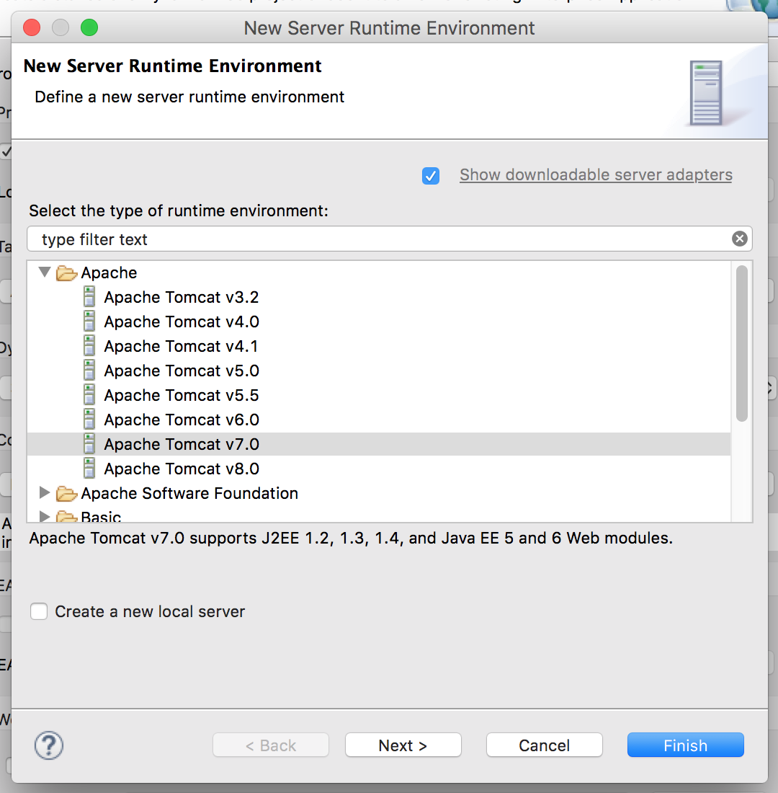
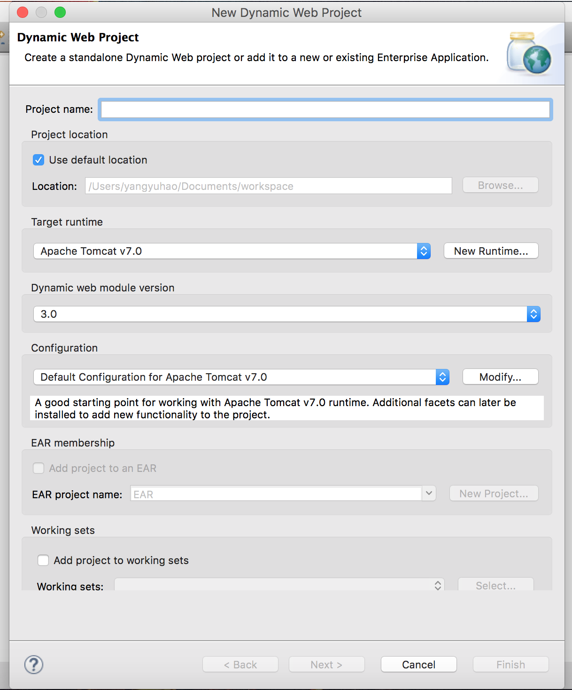

1. javaWeb是由一组Servlet，HTML，类以及其他可以被绑定的资源构成
2. JavaWeb应用中包含的内容: Serclet,jsp,实用类,静态文档,描述web应用的信息等
3. 请求与响应关系图

4. Servlet容器为javaWeb应用提供运行环境，负责管理Servlet和jsp的生命周期，管理他们的共享数据
5. Tomcat目录层次结构
- bin -> 存放启动和关闭Tomcat的脚本文件
- conf -> 存放Tomcat服务器各种配置文件
- lib -> 存放Tomcat服务器和所有web应用程序需要访问的jar
- logn -> 存放Tomcat日志文件
- temp -> 存放Tomcat运行时产生的临时文件
- webapps -> 当发布web应用时，通常把web程序的目录及文件放在此目录下
- work -> Tomcat将jsp生成的Servlet源文件和字节码存放在该目录
6. 修改Tomcat端口号
<!-- tomcat/conf/server.xml -->
<Connector port="8989" protocol="HTTP/1.1"
connectionTimeout="20000"
redirectPort="8443" />
7. Tomcat管理程序
8. Web程序结构

9. 配置Tomcat虚拟目录
10. 使用eclipseEE开发JavaWeb应用
- 将开发者选项切换到javaEE

- 在window -> Show View -> Package Explorer

- 创建Tomcat服务器

- 新建Dynamic Web Project

- 开发javaWeb
- run on server